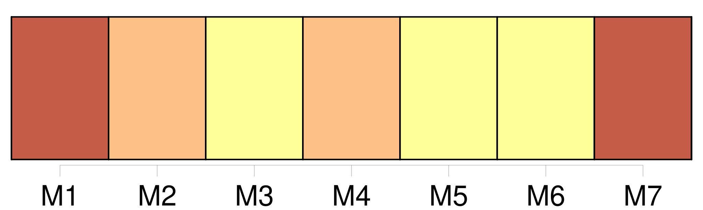
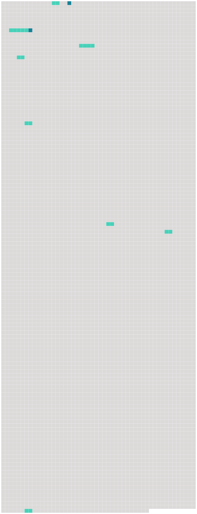

Longueur nb maillons : 10 mentions |
  |
« Ce que je te recommande, ma chère Rosalie, ce sont [tes tablettes] Mets [-y] tout, je t'en supplie, même tes petites observations sur ce que tu verras. [15 phrases] On en jugera par les extraits suivants [des « tablettes » susnommées] [qui] , heureusement, nous ont été conservées. [6 phrases]
N'en prenons pour exemple que cette description, trouvée quelque part dans [les tablettes de Rosalie] [5 phrases]
Nous ne ferons plus guère maintenant que transcrire ce que contiennent [les tablettes] [40 phrases]
Rosalie n'en parle jamais dans [ses tablettes] , pourtant le traitement se poursuivait. [67 phrases]
» [2 phrases]
» [185 phrases] En les suivant au jour le jour on trouvera peut-être que le récit de Rosalie est écrit dans un style un peu monotone, et cependant, par le fait que notre jeune voyageuse passait constamment du sérieux au plaisant, [ses tablettes] , on en conviendra, offrent une lanterne magique assez variée, sans compter les petites remarques enfantines qui reposent des sages descriptions de monuments dont nous passerons quelques-unes. |
 |
La ressource peut être téléchargée sur la page Ortolang
Si vous avez des questions ou vous voyez des erreurs, merci d'envoyer un mail à silvia.federzoni89@gmail.com
Site développé par S. Federzoni (contact)